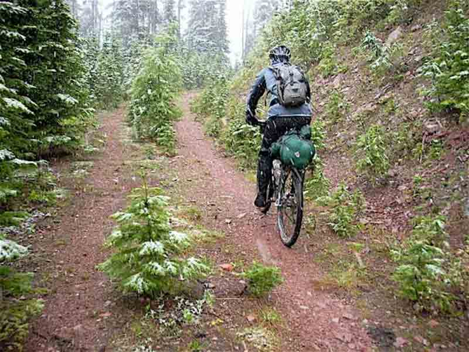

Hours of Operation
Mountain Spokes is Open Monday-Saturday 6 AM - 8 PM.
We are located at 872 Heritage Park Blvd, Bozeman, MT.
773-621-0989

SELECTION OF MOUNTAIN BIKES
We offer our adventurer's many trails and tours in the surrounding Bowman mountain terrain as well as local events that we sponsor and ideas to make your next outing spectacular.
Our experts provide you with the latest models of BMX, Razor and Helo bikes to chose from as well as provide excellent service for repairs, upgrades and other bike accessories and sales.
Come see why all the locals love Mountain Spoke.
Mountain Spokes is Open Monday-Saturday 6 AM - 8 PM.
We are located at 872 Heritage Park Blvd, Bozeman, MT.
773-621-0989